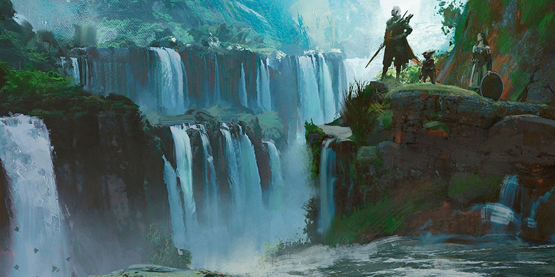

Éladrin et gith
Ce document fournit deux nouvelles options de race pour les joueurs: l'éladrin (une sous-race d'elfe) et les gith. L'éladrin présenté ici est une alternative à la version de la sous-race qui apparaît dans le Dungeon Master's Guide.
Éladrin
Les éladrins sont des elfes natifs de la Féerie, un royaume où la magie est imprévisible et sans limites. En tant que MD, vous pouvez autoriser vos joueurs à opter pour un éladrin en tant que sous-race elfique à la place d’une autre sous-race proposée dans le Manuel des Joueurs. En tant que créature de la Féerie, un éladrin peut se révéler d’une extravagante imprévisibilité. Ils sont généralement d’alignement chaotique neutre, mariant l’amour de la liberté et l’égocentrisme. Les éladrins d’alignement bon ou mauvais suivent leurs principes à l'extrême, devenant alors de grands défenseurs de la justice ou de terrifiants scélérats.
Les quatre saisons
Un éladrin a quatre états de personnalité distincts, un pour chaque saison, entre lesquels ils évoluent lorsqu'ils éprouvent une forte émotion.
L’automne est la saison de la paix et de la bonne volonté, où l’on partage ensemble les récoltes de l’été. Les éladrins adoptent cette personnalité lorsqu’ils sont emplis de satisfaction.
L’hiver est la saison de la douleur, où l’énergie vibrante du monde sommeille. C’est le temps de la tristesse et du regret, où l’éladrin pénètre lorsqu’il est submergé par le chagrin.
Le printemps est la saison de la gaieté, où l’on célèbre le bris des glaces hivernales qui libère la joie et le bonheur trop longtemps endormis. L’éladrin entre dans cet état lorsqu’il éprouve une joie intense.
L’été est la saison de l’audace et de l’agressivité, le temps où se déchaînent les énergies. Les éladrins adoptent cette personnalité lorsqu’ils ressentent une immense fureur.
Vous pouvez créer les traits de personnalités et les défauts de chacune des saisons par lesquelles passera un éladrin, reflétant sa fougueuse personnalité. Vous pouvez aussi vous servir des tables suivantes pour les tirer au hasard ou pour y trouver de l’inspiration. Pour mieux rendre compte de l’imprévisibilité de votre personnage, vous pouvez tirer les traits et les défauts au hasard lors de chaque changement de saison.
| d4 | Trait de personnalité d'automne |
| 1 | Vous ne refusez jamais d’aider quelqu’un dans le besoin. |
| 2 | Vous partagez tout ce que vous avez, faisant peu de cas de vos propres besoins. |
| 3 | Chaque repas est un véritable festin, aussi simple soit-il. |
| 4 | Il est impensable pour vous de partir à l’aventure sans faire provision de mets et de boissons raffinés. |
| d4 | Défaut d'automne |
| 1 | Vous faites confiance à n’importe qui, sans réfléchir. |
| 2 | Vous donnez aux autres au point de ne plus avoir de quoi subsister. |
| 3 | Tout le monde est votre ami, ou pourrait bien le devenir. |
| 4 | Vous dépensez de manière insensée pour le confort des autres. |
| d4 | Trait de personnalité d'hiver |
| 1 | La pire situation est souvent la plus probable. |
| 2 | Vous préservez vos avoirs. Mieux vaut être affamé aujourd’hui et pouvoir se nourrir demain. |
| 3 | Le monde est un endroit dangereux. Vous ne baissez jamais votre garde. |
| 4 | Chaque pièce dépensée est perdue à jamais. |
| d4 | Défaut d'hiver |
| 1 | Toute chose finit par mourir un jour. Pourquoi s’ennuyer à construire quelque chose de durable ? |
| 2 | Rien n’a d’importance à vos yeux, et vous laissez les autres guider vos actions. |
| 3 | Vos besoins avant tout. En hiver, c’est chacun pour soi. |
| 4 | Vous ne parlez aux autres que pour souligner les faiblesses de leurs plans. |
| d4 | Trait de personnalité de printemps |
| 1 | Chaque jour est le plus beau jour de votre vie. |
| 2 | Vous faites tout avec enthousiasme, même les corvées les plus banales. |
| 3 | Vous adorez la musique et les chansons. Vous trouverez toujours un petit air à jouer si personne n’en a à proposer. |
| 4 | Vous ne restez pas en place. |
| d4 | Défaut de printemps |
| 1 | Vous buvez plus que votre soûl. |
| 2 | Le travail, c’est bon pour les bêtes de somme. La vie devrait être faites de loisirs uniquement. |
| 3 | Un instant un joli visage vous fait tourner la tête, l’instant d’après vous passez à autre chose. |
| 4 | Quelque chose qui doit être fait, c’est déjà quelque chose de trop à faire. |
| d4 | Trait de personnalité d'été |
| 1 | Vous pensez que la confrontation directe est la meilleure façon de résoudre les problèmes. |
| 2 | La force est la réponse à tout. Si ça résiste, c'est qu'il faut frapper plus fort. |
| 3 | Les autres peuvent compter sur votre force et votre courage. |
| 4 | Vous cherchez à intimider les autres. Mieux vaut leur montrer tout de suite à qui ils ont à faire plutôt que d’être forcé de leur faire mal. |
| d4 | Défaut d'été |
| 1 | Vous êtes têtu. Ce sont les autres qui ont tort. |
| 2 | La meilleur option doit être rapide, inattendue, et doit submerger l’adversaire. |
| 3 | On frappe d’abord. On parle après. |
| 4 | Votre colère vous permet de surmonter toutes les épreuves. |
Traits
Les éladrins sont des créatures qui ressentent de puissantes émotions et qui y insufflent un pouvoir qui peut s’aligner sur la magie des saisons.
Augmentation de caractéristiques. Votre Intelligence ou votre Charisme augmente de 1, au choix.
Pas féerique. Par une action bonus, vous vous téléportez à un endroit que vous pouvez voir et qui se trouve à 9 mètres ou moins de l’endroit que vous occupez. Une fois que vous avez utilisé ce trait, vous ne pouvez plus l’utiliser avant d'avoir terminé un repos court ou long.
Changement de saison. À la fin de chaque repos court ou long, vous pouvez vous aligner sur la magie d’une saison, sans vous soucier de la saison qui domine votre personnalité. Dans ce cas, vous pouvez lancer un sort mineur comme indiqué dans la table ci-dessous et perdez de ce fait la possibilité de lancer le sort mineur de la saison sur laquelle vous étiez précédemment aligné. L'Intelligence ou le Charisme est votre caractéristique d'incantation pour ces sorts, selon celle qui possède la valeur la plus haute.
| Saison | Sort mineur |
| Automne | Amis |
| Hiver | Contact glacial |
| Printemps | Illusion mineure |
| Été | Trait de feu |
Gith
Si votre MD vous l'autorise, vous pouvez créer un personnage gith en utilisant les règles suivantes. Consultez le Monster Manual pour plus d'informations sur l'histoire des gith.
Traits
Les gith partagent un certain nombre de traits.
Augmentation de caractéristiques. Votre Intelligence augmente de 1.
Âge. Les gith atteignent l’âge adulte peu avant 20 ans et vivent environ 100 ans.
Taille. Les gith sont plus grands et plus élancés que les humains, mesurant pour la plupart 1,80 mètre en moyenne.
Vitesse. Votre vitesse de base est de 9 mètres.
Langues. Vous pouvez parler, lire et écrire le commun et le gith.
Sous-races. Il y a deux types de gith, les githyanki et les githzerai. Choisissez l’une de ces sous-races.
Githyanki
Les gigthyanki sont des être brutaux entraînés depuis leur naissance pour devenir des guerriers.
Augmentation de caractéristiques. Votre Force augmente de 2.
Alignement. Les githyanki sont d’alignement loyal mauvais. Ils sont égocentriques, violents et arrogants, mais sont dévoués à leur reine liche Vlaakith. Certains gith renégats qui ont trahi ses volontés deviennent chaotiques.
Maîtrise opulente. Vous apprenez une langue de votre choix et maîtrisez une compétence ou un outil de votre choix. Dans la cité de Tu’narath où le temps n’existe pas, les githyanki ont tout le temps de s’intéresser à n’importe quel pan de la connaissance.
Guerrier prodige. Vous maîtrisez les armures légères et intermédiaires. Votre peuple est toujours prêt à guerroyer.
Pouvoirs psioniques gigthyanki. Vous connaissez le sort mineur main de mage. Lorsque vous atteignez le niveau 3, vous pouvez lancer saut une fois entre deux repos longs. Lorsque vous atteignez le niveau 5, vous pouvez lancer foulée brumeuse une fois entre deux repos longs. L'Intelligence est votre caractéristique d'incantation pour ces sorts. Vous pouvez les lancer sans utiliser de composantes.
Githzerai
Dans leur forteresse située à l’intérieur de Limbo, les githzerai aiguisent leur esprit comme une lame de rasoir.
Augmentation de caractéristiques. Votre Sagesse augmente de 2.
Alignement. Les githzerai sont d’alignement loyal neutre. Leur capacités psychiques sont entraînées avec rigueur et requièrent une implacable discipline mentale.
Entraînement monacal. Vous avez un bonus de +1 à la CA lorsque vous ne portez pas d’armure intermédiaire ou lourde et n’utilisez pas de bouclier. Tous les githzerai reçoivent un entraînement monacal, et ceux qui deviennent moines sont pourvus de capacités défensives inégalées.
Pouvoirs psioniques githzerai. Vous connaissez le sort mineur main de mage. Lorsque vous atteignez le niveau 3, vous pouvez lancer bouclier une fois entre deux repos longs. Lorsque vous atteignez le niveau 5, vous pouvez lancer détection des pensées une fois entre deux repos longs. La Sagesse est votre caractéristique d'incantation pour ces sorts. Vous pouvez les lancer sans composantes.
Taille et poids
Race |
Taille de base |
Modificateur de taille (cm) |
Poids de base |
Modificateur de poids (kg) |
| Eladrin | 1,35 m | +2d12 x 2,50 | 45 kg | x 1d4 / 2 |
| Githyanki | 1,55 m | +2d12 x 2,50 | 50 kg | x 2d4 / 2 |
| Githzerai | 1,50 m | +2d12 x 2,50 | 45 kg | x 1d4 / 2 |
Taille = Taille de base + Modificateur de taille
Poids = Poids de base + Modificateur de taille x Modificateur de poids

Écrit par Mike Mearls et Jeremy Crawford, traduit par Zoran999